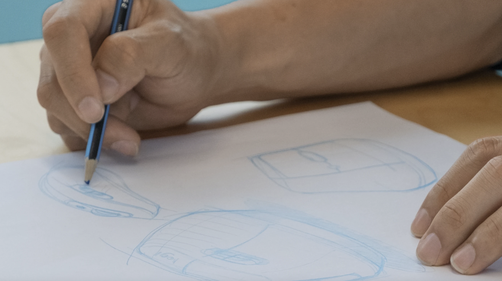
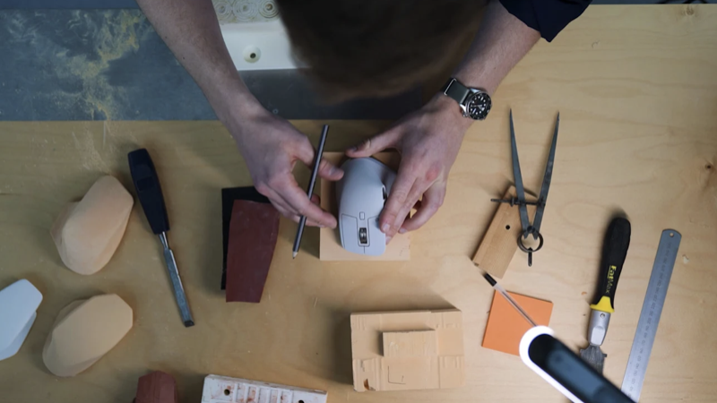
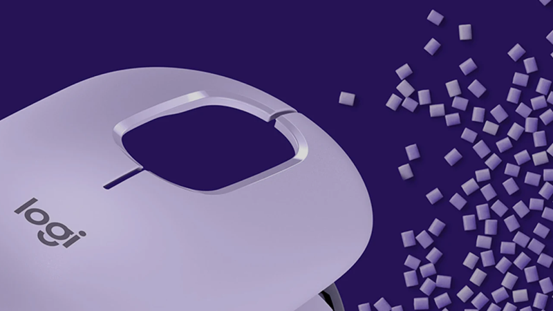

지속가능성을 위한 디자인은 모든 것에 대해 다시 생각하는 것에서 시작됩니다.
설계 첫 단계부터 유통 과정까지 로지텍은 비즈니스의 모든 핵심 요소를 면밀히 점검하고 새롭게 정의하고 있습니다.
더 나은 결과를 만들기 위해선, 그 무엇도 사소하지 않습니다.

중요한 건 로지텍이 챙깁니다. 고객은 안심하고 선택하시면 됩니다.

더 작게 설계합니다. 더 나은 것을 선택합니다. 단 하나도 타협하지 않습니다.
